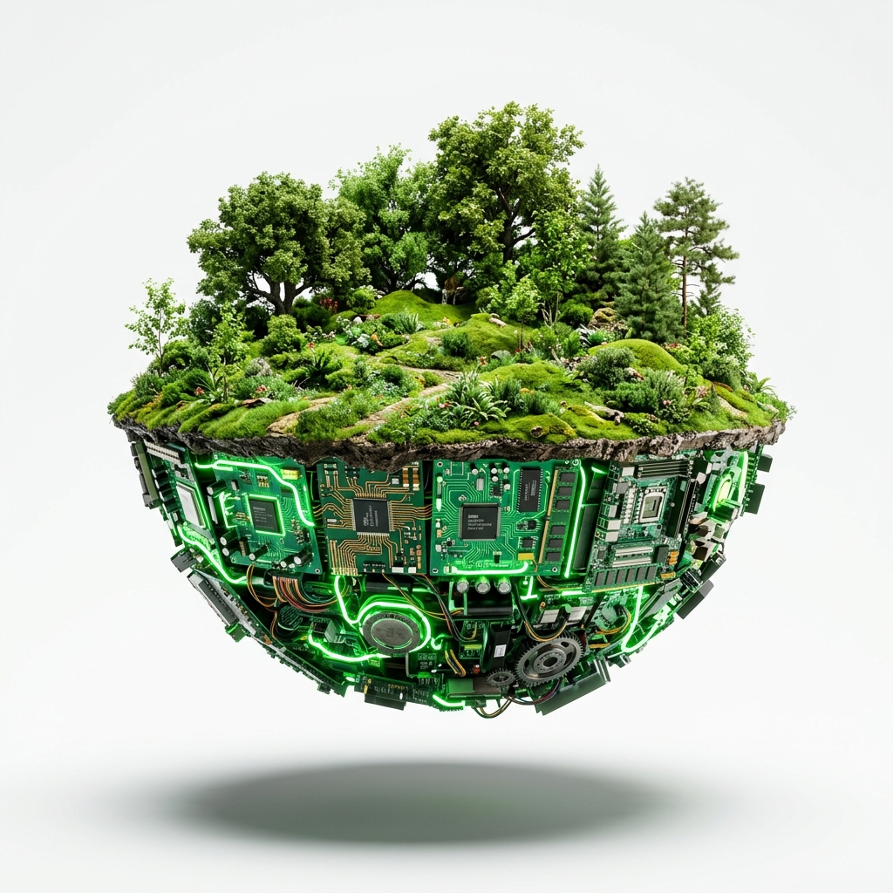

Platform digital yang menghubungkan pemilik e-waste, pengepul, dan industri daur ulang secara efisien.

Kenali misi dan visi platform
3 aktor dalam satu ekosistem
Temukan titik terdekat
Jual beli material e-waste